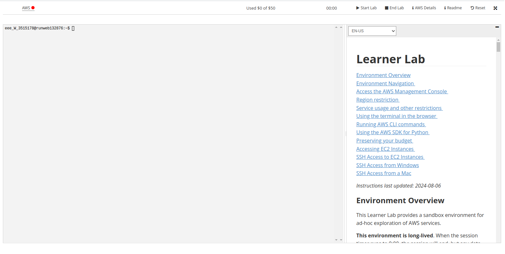
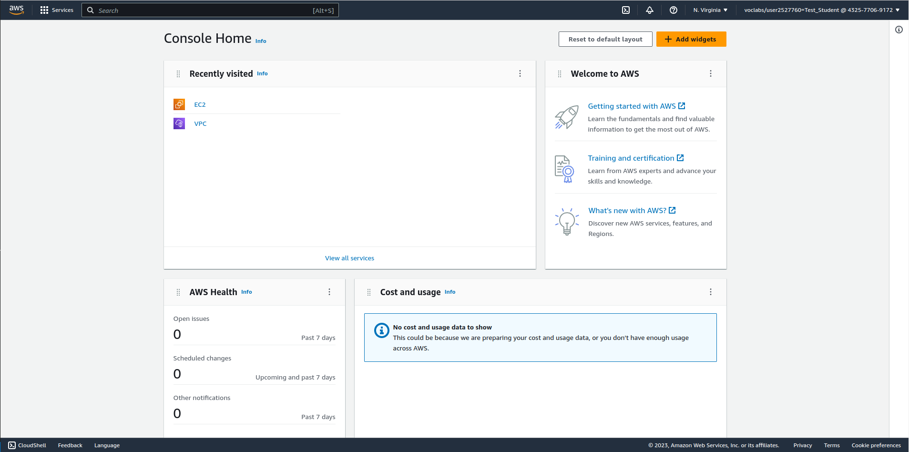

Lab 1 - Introduction to Amazon Web Services (AWS)
Overview
This week's lab will cover the following:
- Accessing the AWS Learner Lab.
- Navigating the AWS Console interface.
- Configuring Virtual Private Cloud (VPC).
- Navigating Amazon Elastic Cloud Compute (EC2)
- Configuring VPC Security Groups.
- Implementing SSH key pairs & paired key encryption.
- Deploying an instance in AWS.
Accessing the AWS Learner Lab.
You should have recieved an email (in your Centennial College email) from your professor inviting you to participate in the AWS Academy Learner Lab. If you have recieved and accepted this invitation you may proceed with this lab. If you have not recieved this invitation you should contact your professor immediately. You may continue with the rest of the lab once you have recieved the invitation.
The AWS Learner Lab provides a sandbox environment where you can build, configure and deploy AWS assets such as instances. There are some limitations as to what you can do, however it provides all the functionality we require for this course. In the first 3 labs you will be learning how to build an Apache Web Server in AWS. You will use this Apache Web Server to publish your web pages on in Labs 4-10. You are limited to $100 credit at no cost within the learner lab. Once this runs out, all your work will be deleted automatically. Additionally, there is no way to add funds to this pool. If you follow the lab instructions properly you should not have any issues.
Once you have accepted your invitation and logged in to the AWS Learner Lab navigate to Courses (on the left hand side) > Modules > Learner Lab. You should see a screen that looks like the following:
Some important things to note on this screen:
- Start Lab
- Starts the Learner Lab environment.
- Stop Lab
- Stops the Learner Lab environment.
- Used $0 of $100
- Shows the balance used of your $100 credit. If this hits $100 of $100 used, your work is gone. Be careful.
- AWS with a red dot next to it
- Once your lab has started, this will turn green. You can then click on this to open the environment.
Navigating the AWS Console interface
Start your session in the Learner Lab by clicking on the Start Lab button. Once the red dot has turned green, click on it to enter the Learner Lab. This will take you to the AWS Console (depicted below), which will be where you will do most of your work. It also mirrors a production AWS interface. Note: Your screen may not look 100% identical to the one depicted, but should be mostly the same.
If you click on Services in the top left corner (beside the AWS logo), you will see all the services you can configure in the AWS learner lab. Common ones we will use are EC2 and VPC. You can search for these in the search bar, or browse the categories. Recently visited services will show up under the heading Recently visited. If you hover over any service you will see a greyed in star to the left of the name. You can click on this to add it to your favourites for easy access.
Configuring Virtual Private Cloud (VPC)
An Amazon Virtual Private Cloud (VPC) is a dedicated virtual network within AWS' public cloud. It work similar to how a traditional network does in a data center. To access the VPC settings, click on Services (top left corner beside the AWS icon), and navigate to Networking & Content Delivery > VPC. Click on VPC.